Seven kinds of cutting die. One shop in Fremont, Ohio.
Steel rule, Viking, forged, contour trim, machined, specimen and match-metal dies, designed and built in-house by a team with over 40 years in the die industry.
Attach your drawing or a photo of the part, with the material and quantity.
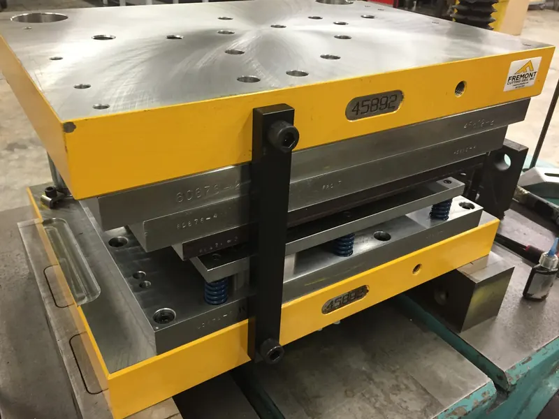
Pick the die by the length of the run.
Die life, tolerance and investment for each type Fremont builds, side by side. Not sure which one your part needs? Send it over and ask.
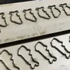
Steel rule
Tolerance 0.010″ to 0.060″Low investment
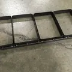
Viking clicker
Tolerance 0.032″Low investment
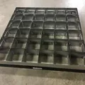
Forged
Tolerance 0.005″ to 0.015″Moderate investment
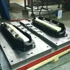
Contour trim
Tolerance 0.015″Moderate to high investment
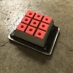
Machined
Tolerance 0.002″ to 0.005″, or 0.001″ with wire EDMModerate to high investment
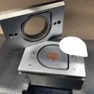
Match-metal punch and die
Tolerance up to 0.001″High investment
Figures are the die life and tolerance Fremont Cutting Dies publishes for each die type. Tolerance also depends on the shape of the part. Forged, contour trim and machined dies can be releveled and resharpened many times; steel rule and Viking dies are case hardened and get re-ruled or replaced.
Specimen dies, in stock and certified.
Test-standard specimen dies in premium tool steel. Many common standards are kept in stock for quick delivery, and custom specimen dies are made to order.
- ASTM
- ISO
- JIS
- DIN
- Certified in-houseIn a climate-controlled inspection department, on ISO/IEC 17025 certified inspection equipment.
- Resharpened and recertifiedAny ASTM, ISO, JIS, DIN or EN cutting die, including dies from other makers.
- Shipped in a caseA durable case that doubles as storage. A custom shank or mallet handle can be added.
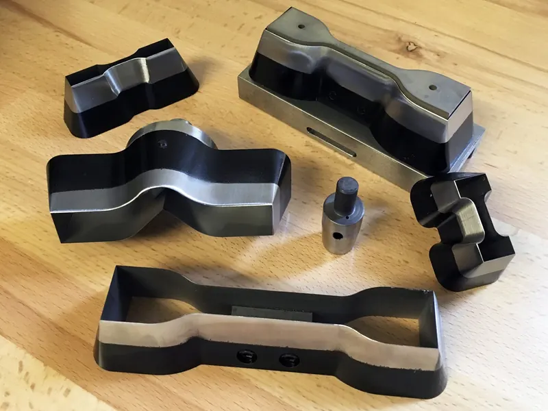
From the shop floor.
Dies and parts from Fremont Cutting Dies’ own project galleries.
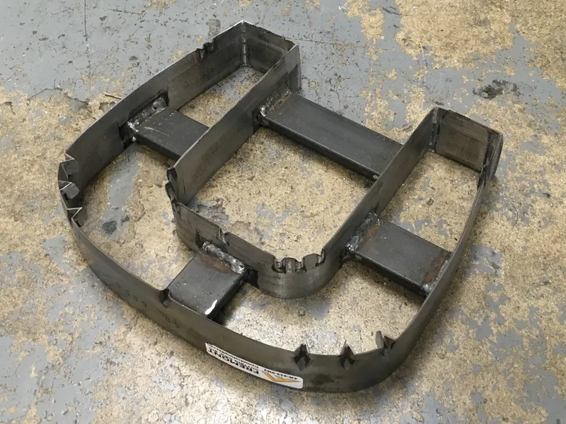
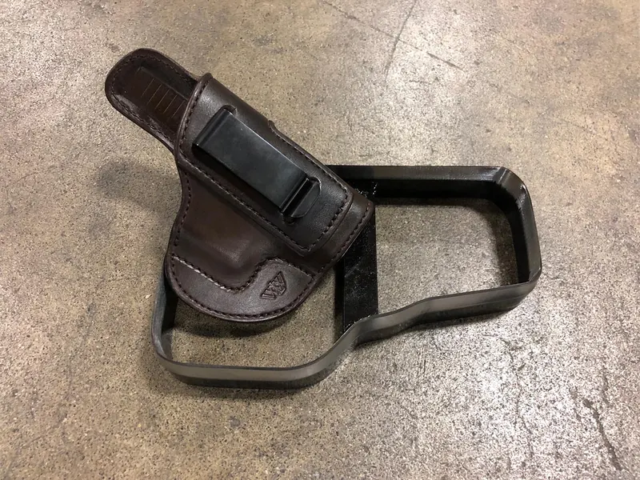
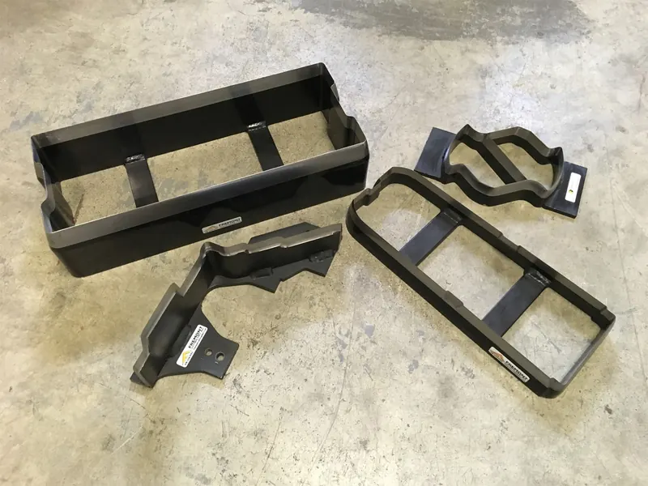
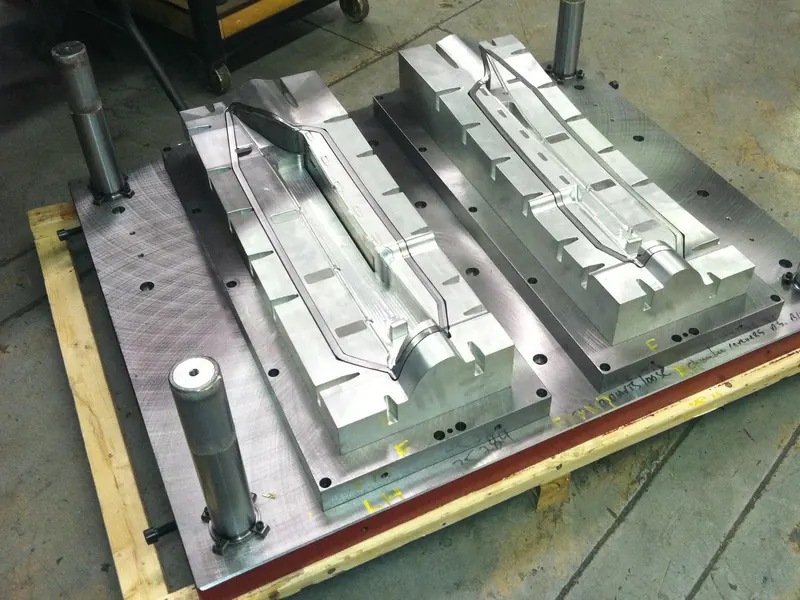

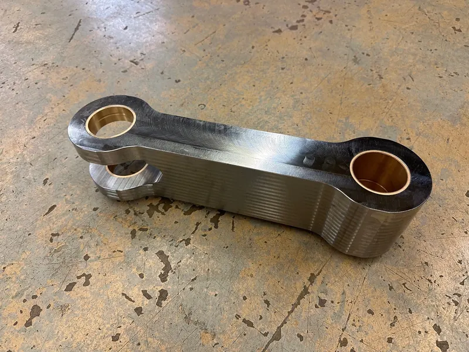
Contract machining and fabrication, same building.
The machines that build the dies also take outside work: parts machined complete or a single feature added, plus welding, racks, carts and fixture tables.
- 17″ × 24″ × 12″
Wire EDM
Approximate travel, for intricate shapes and tight tolerances.
- 42″
Blanchard grinding
Chuck size, for large components.
- 16″ × 32″
Surface grinding
Chuck, with a table load of about 1,500 lb.
More equipment
- 80 ton
Sharp edge cutting press
24″ × 72″, 4-post, for die try-outs and runs under 100 impressions.
- 2pt–4pt
CNC auto bending
Every steel rule die, 0.937″ to 2″ high.
- CO2 laser
Laser cutting
Thin gauge mild and stainless steel; short runs cut with no die at all.
Materials
Fremont buys the material for the job, or works from material you supply.
Also on the floor
Send the part. Get a price and a lead time.
Email a drawing or a photo, the material and the quantity. Dies, sharpening, certification or contract machining.
requestsHow a machining job runs
- You get a clear price and lead time.
- On approval, Fremont orders the material or receives yours.
- The parts are machined to your specifications.
- The order ships, is delivered, or is ready for pickup.
3179 E State Street
Fremont, Ohio 43420